Une application qui voit, entend et répond
Mickael Débonnaire @mdebonnaire
Christophe Jollivet @jollivetc
Histoire
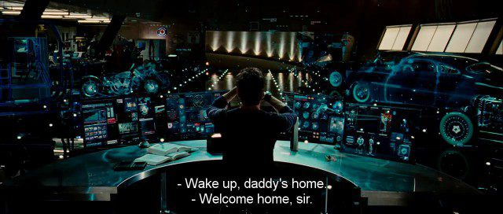speakers
Christophe Jollivet
@jollivetc
Agitateur Technique
Apside
Mickael Débonnaire
@mdebonnaire
FullStack Développeur
Apside
Le projet
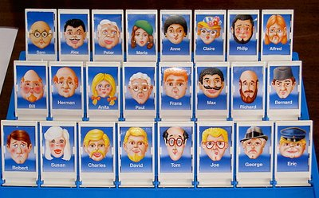Démo
Etapes
Voir
Entendre
Comprendre
Répondre
Voir
La problèmatique
"Comment identifier les éléments d'un visage?"
Théorie
- Domaine IA : Traitement d'image, Reconnaissance des formes , Face recognition
- Mots clés: Extraction Feature Face Recognition
- Exemple d'algorithmes : filtre de Gabor et réseaux de neurones
Mais aussi API "clé en main"
Cloud Vision API
De nombreuses solutions génériques
- Google Cloud Vision API
- Microsoft cognitive services
- AWS Rekognition
- Watson visual recognition (IBM)
Des solutions spécialisées
Informations
| Service | Informations |
| Label, logo, landmark, OCR, visage, attributs | |
| Microsoft | Label, description, OCR, visage, attributs |
| AWS | label, visage, attributs |
| Watson | label, visage |
| Kairos | visage |
| Betaface | visage |
Informations de visage
| Service | Informations |
|---|---|
| Point, direction, expression | |
| Microsoft | Points, direction, age, expression, genre, barbe, lunette |
| AWS | Points, direction, age, expression, genre, barbe, lunette |
| Watson | Age, genre |
| Kairos | Points, direction, age, genre, ethnie |
| Betaface | Points, direction, age, expression, genre, ethnie, barbe, lunette, cheveux, dents... |
Betaface : les critères
- Genre : male | female
- Lunette : yes | no
- Barbe : yes | no
- Type de couleur de cheveux : black | blond | red | brown | brown light | not natural light | not natural
Soit 2*2*2*7 = 56 groupes
L'utilisation de BetaFace
Détection en deux temps
- un service pour enregistrer l'image
- un service pour récupérer les caractéristiques de l'image
Statistiques
232/274 speakers analysés
- 2 error 404
- 4 error 403
- 3 empty file
- 5 error processing file
- 1 URL too long
- 27 no face detected
No Face
Vrai
Art
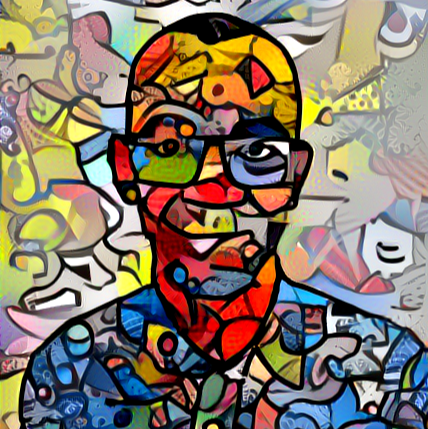No Face
Loin et petit
Profil

Bétisier
brun à 0, 0 et 0,32
blond à 0,38 et 0,75
femme à 0,65 et 1
Femmes
53 speakers identifiés comme femme
Philippe, Isabelle, Thomas, Morgan, Erwan, Josh, Simon, Charles, Meriem, Antonin, Yvan, Yves, Grégory, Alexandre, Lauren, Quentin, Laurent, RAMRAMI, Gabriel, Hugo, Olivier, Heather, Megane, Jean, Fred, Yiquan, Sarah, Sonia, Bounkong, Jean-Francois, Jean-Christophe, Ryan, Mathieu, Laure, Eric, Etienne, Yannick, Guillaume, Angela, Emmanuel, Benjamin, Dimitri, Brian, Jérôme, Christophe, Laurène, Bachir, Nicolas, Matt
Utilisation
En amont pour alimenter la base de données
Deux services :
- Récupération de n speakers ID dans des catégories différentes
- Récupération d'informations des speakers
Entendre/Ecouter
La problèmatique
"Comment transformer un flux audio/ un son vers du texte?"
Théorie
- Domaine IA : Reconnaissance Vocale, sous-domaine de Natural Language Processing NLP
- Mots clés: Speech To Text et Automated Speech Recognition(ASR)
- Exemple d'algorithme : Chaînes de Markov cachées ou/et Réseaux de neurones
Mais aussi API "clé en main"
API Speech to Text
- API en ligne
- Watson, Google, Microsoft
- Bibliothèques
- JuliusJS
- Pocketsphinx.js
- Wrappers de SpeechRecognition
Support
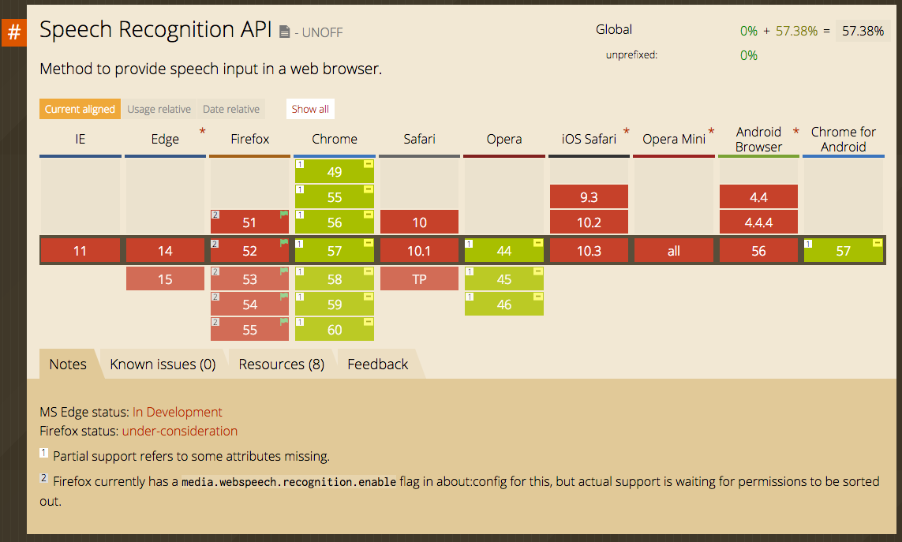Le code
var recognition = new webkitSpeechRecognition();
recognition.onresult= function(event){
console.log(event.results[0][0].transcript);
console.log(event.results[0][0].confidence);
}
recognition.start();
Code
var recognition = new webkitSpeechRecognition();
recognition.onresult= function(event){
console.log(event.results[0][0].transcript);
console.log(event.results[0][0].confidence);
}
recognition.lang="fr-FR";
recognition.onend= function(event){};
recognition.onstart= function(event){};
recognition.start();
Problèmes
- Chrome only
- Confidentialité
- Grammar à approfondir
- Autorisations
- Ecoute en continue
- Multi onglets
Comprendre
La problèmatique
"Comment analyser, réagir et se souvenir ?"
Théorie
- Domaine IA: Classification et extraction d'informations, sous-domaine de NLP et NLU, Agents Conversationnels
- Mots clés: NLP, NLU, Named-entity recognition
- Exemple d'algorithme : Classification à partir de modèles statistiques et stochastiques
Mais aussi des plateformes "clé en main"
les Bots conversationnels
Type simple
- Conversation basique
- Nombreuses plateformes
- Exemples : Chatfuel, Octane.ai, Motion.ai
les Bots conversationnels
Type simple "programmable"
- Conversation simple
- Modèle XML de la conversation
- Exemples : Pandorabots
les Bots conversationnels
"AI Platform" (notre choix)
- Conversation avancée
- Interfaces, API, Machine Learning
- Exemples : Api.ai , Wit.ai , Microsoft Luis, IBM Watson, Amazon Lex
Capacités -> Concepts
- Comprendre -> Intention (Intent)
- Réagir -> Fallback Intent
- Extraire -> Entité
- Demander -> Dialog
- Conserver -> Contexte
- Faire -> Action, Webhook
- S'améliorer -> Training
API.ai : Intent
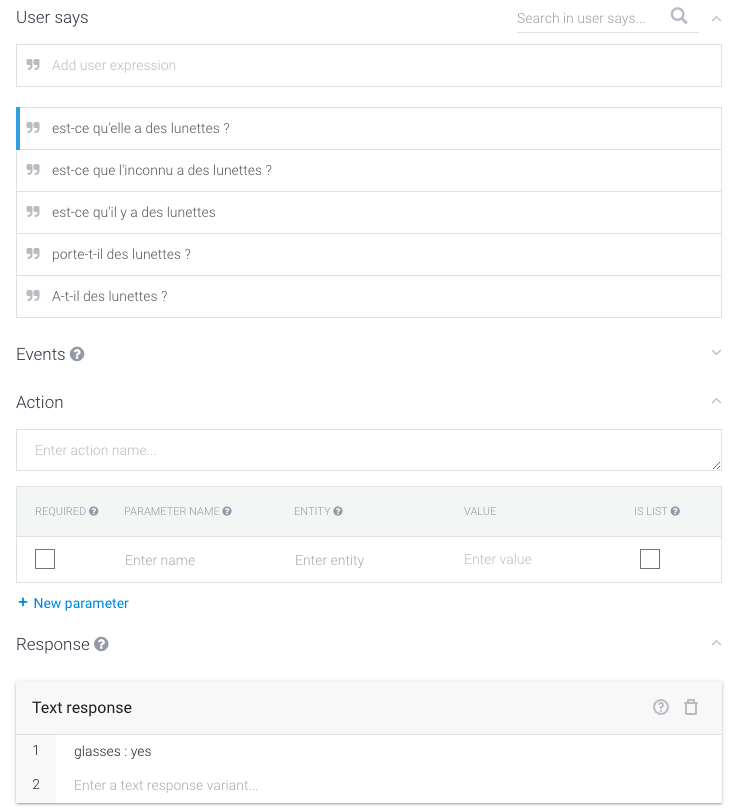API.ai Fallback
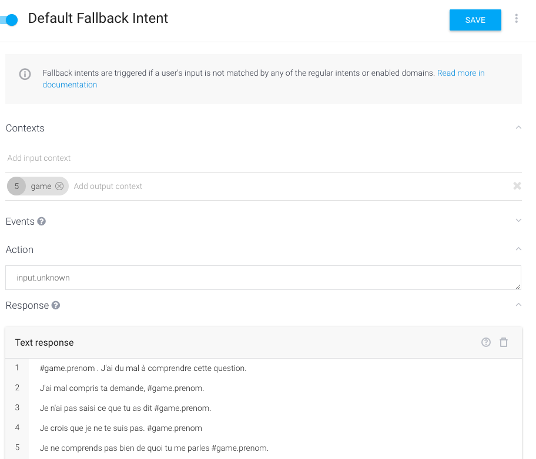API.ai : Entity
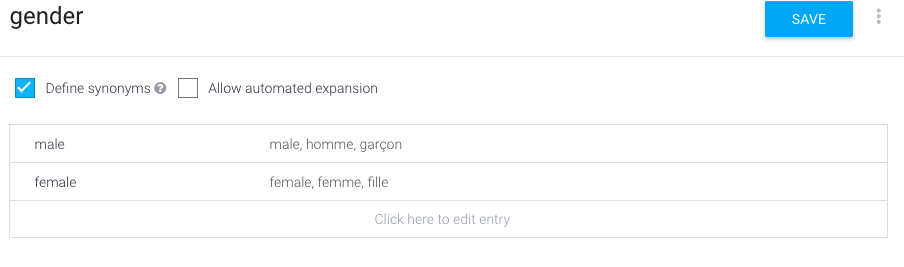API.ai : Entity - Intent
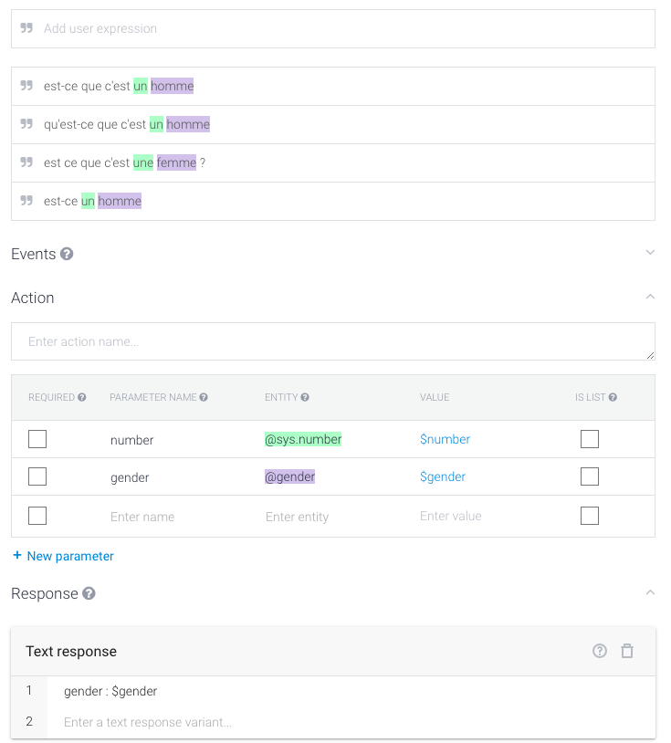API.ai : Dialog
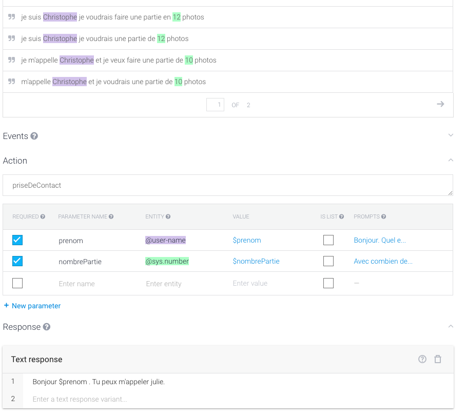API.ai : Context
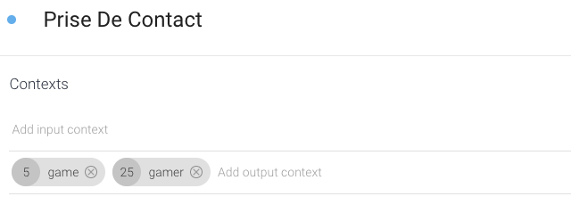 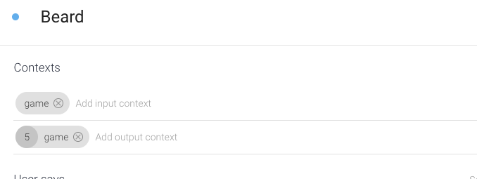API.ai : Webhook
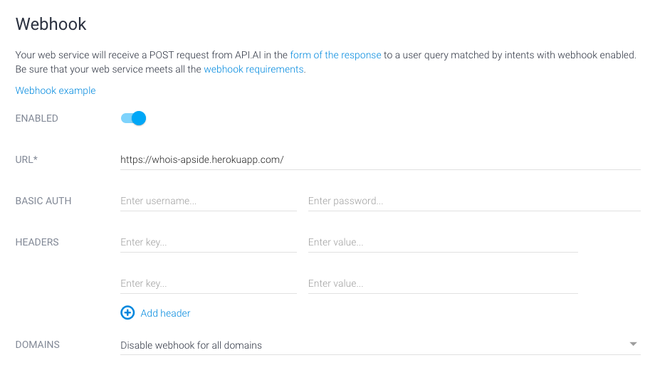API.ai : Webhook
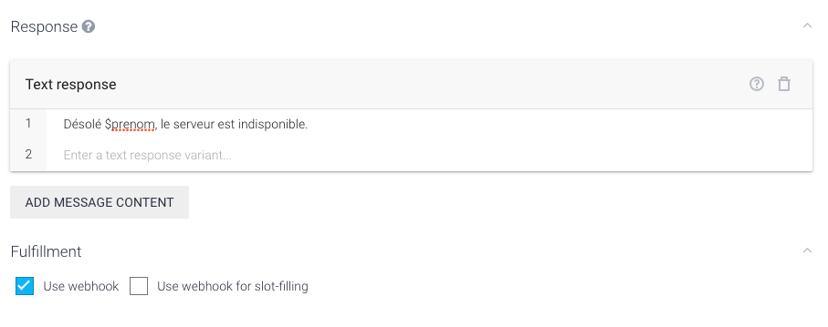Webhook
{
"speech": "Something to say",
"displayText": "More things to show",
"data": {...},
"contextOut": [...],
"source": "Some Web Site"
}
API.ai : Training
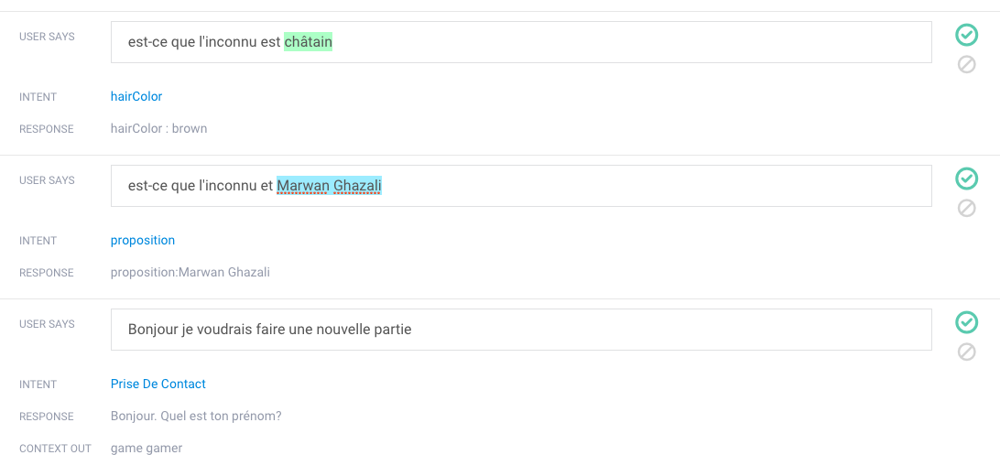Répondre
La problèmatique
"Comment transformer un texte en flux Audio ?"
Théorie
- Domaine IA : Synthése vocale ( Text to Speech), sous-domaine de NLP
- Mot clé : TTS, Vocal Synthesis, Concatenative Synthesis, Parametric Synthesis
- Exemples d'algorithme : Concatenative, Parametric, WaveNet
Mais aussi des API "clé en main"
API Text to Speech
API en ligne
- Génération de flux audio
- Latence réseau
- Exemples : Text to speech Watson, Bing Speech, Amazon Polli, Acapella
Speech Synthesis
Support
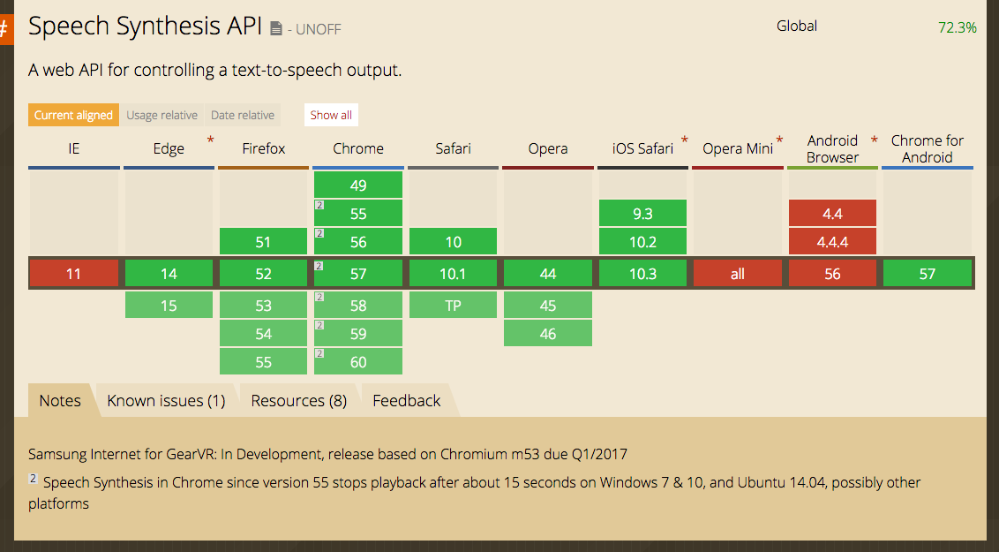code
var msg = new SpeechSynthesisUtterance(message);
msg.lang = 'fr-FR';
window.speechSynthesis.speak(msg);
code
var msg = new SpeechSynthesisUtterance(message);
msg.lang = 'fr-FR';
msg.voice = window.speechSynthesis.getVoices()[10];
msg.pitch = 1;
msg.rate = 1;
window.speechSynthesis.speak(msg);
code
var msg = new SpeechSynthesisUtterance(message);
msg.lang = 'fr-FR';
msg.voice = window.speechSynthesis.getVoices()[10];
msg.pitch = 1;
msg.rate = 1;
msg.onstart = function(event){};
msg.onend = function(event){};
window.speechSynthesis.speak(msg);
Intégration
Analyse des images
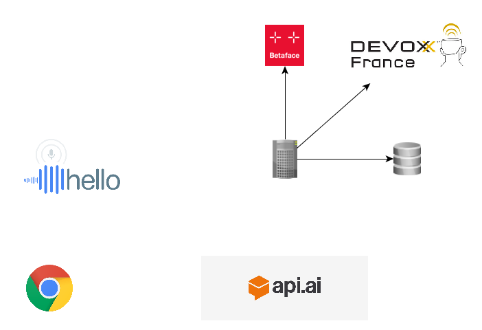Initialisation de partie

Initialisation de partie

Initialisation de partie

Partie

Conclusion
Agréablement surpris par la simplicité
Tout les services ne sont pas matures
Questions
#DevoxxFR @mdebonnaire @jollivetc